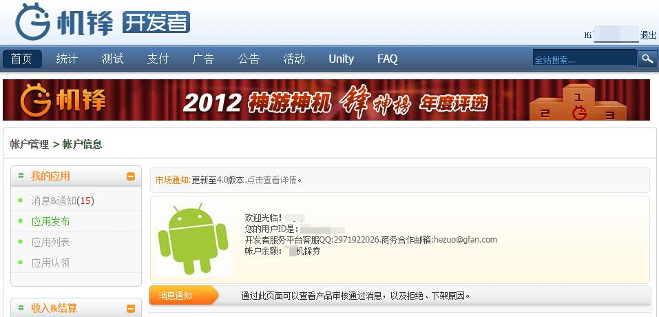
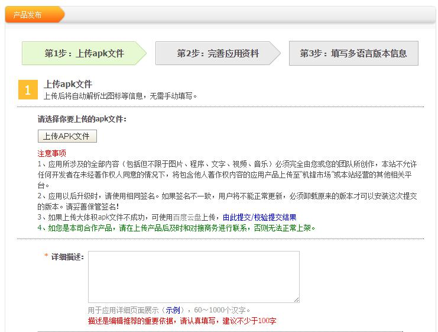
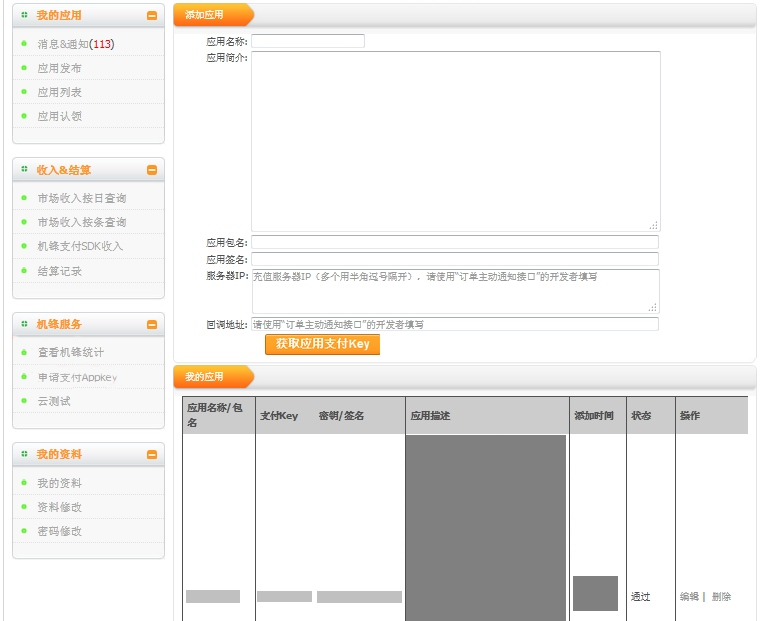
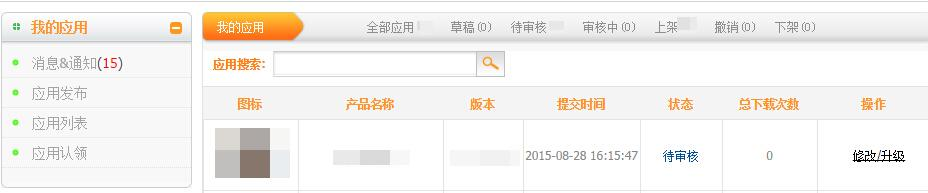

机锋官方后台地址：http://dev.gfan.com/
西瓜SDK所需的参数gfan_pay_appkey、用户ID等参数均在机锋后台获取，gfan_cpid，由用户依据本身游戏特性自定义。
获取参数步骤：1. 注册开发者账号；
2. 登录机锋渠道后台，点击【应用发布】，看到”您的用户ID是：***”，便获取到对应参数用户ID；

3. 填写游戏相关信息，点击下一步；

4. 点击”申请支付Appkey”后，可创建新应用，填入应用相关信息，可以获取参数gfan_pay_appkey，如下图所示：。

5. 在【我的应用】中可以查看游戏的审核状态。
